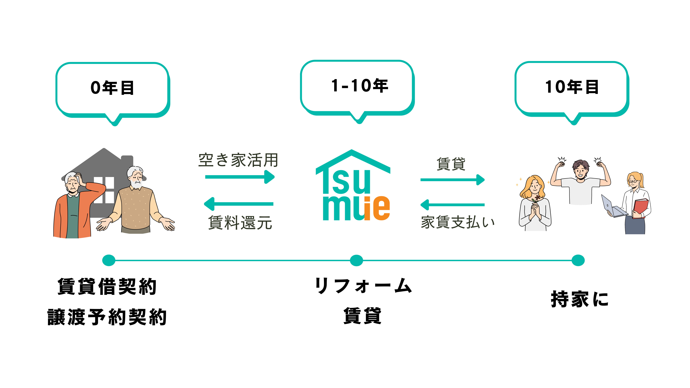
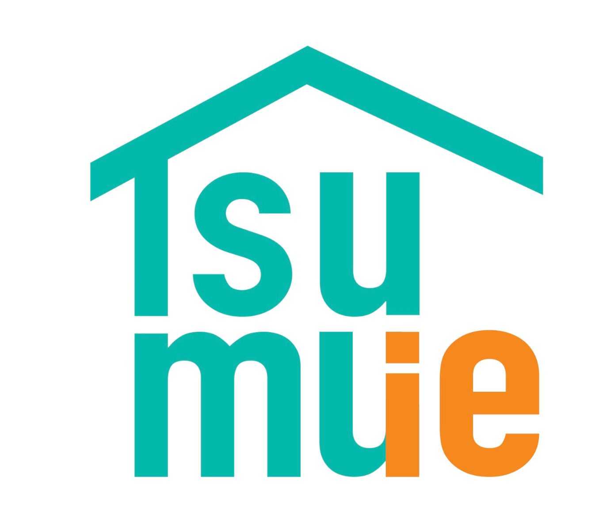

とは
とは
賃貸×将来取得の
新しい空き家活用

Tsumuieは、空き家オーナー様と
住まいを真剣に探す挑戦者を
つなぐハイブリッドサービスです。
入居者はまず賃貸としてスタートし、
10〜15年後に事前に合意した条件でお家を取得します。
管理・マッチング・契約設計まで、一貫してサポートし、
遠方のオーナー様にもオンラインで丁寧に対応します。
関西エリア対応
オンライン相談OK

LINE相談
とは

Tsumuieは、空き家オーナー様と
住まいを真剣に探す挑戦者を
つなぐハイブリッドサービスです。
入居者はまず賃貸としてスタートし、
10〜15年後に事前に合意した条件でお家を取得します。
管理・マッチング・契約設計まで、一貫してサポートし、
遠方のオーナー様にもオンラインで丁寧に対応します。
の考え方
すぐに売却するのではなく、まず空き家を賃貸として活かす選択を。毎月の収入を得ながら、大切な家を守り続けます。
家を持ちたい家族のマイホームとして再活用し、次の世代へとつなぐ選択に変わります。家の記憶も、一緒に受け継がれます。
 を使えば、すぐに売却するのではなく、
を使えば、すぐに売却するのではなく、
まず「活かす」という選択ができます。
そして、家を持ちたい家族のマイホームとして再活用し、
「つなぐ」選択に変わります。
関東や他府県に住みながら関西の実家を相続——草木の管理、近所への申し訳なさ、現地に行く手間が積み重なります。
空き家のまま放置すると固定資産税は上がり、老朽化も進む一方。でも売るにも貸すにも踏み出せていません。
思い出の実家を手放すには踏み切れない。次に住む方には大切に使ってほしい。
不動産会社に相談すると売却を勧められる——自分の状況にあった選択肢を丁寧に聞いてほしい、という声は多いです。
出典：総務省「住宅・土地統計調査」（2023年）
建物の老朽化が進行
「特定空家」に指定されると
雑草・害虫・不法侵入など
行政代執行（強制解体）で
買い手がつかないまま
管理責任を問われる
「うちの空き家、どうすればいいか分からない」
まずは30分の無料相談から。オンラインで完結できます。
2つの契約を同時に結ぶことで、
オーナー様も入居者も「見通しのある関係」を築きます。
← 横にスクロールできます →
更新なしの定期借家契約で賃貸をスタートします。
将来の売却価格・時期・条件を契約時にあらかじめ明文化します。
将来自分のものになる家として、入居者は大切に使い、リフォームも自由に行います。
オーナー様には毎月賃料が入ります。
入居者がオーナー様のお家を譲渡。お家を引き継ぎ大切に使い続けます。
持て余していた空き家が、毎月の賃料という形でしっかり収益を生む資産に変わります。固定資産税を払うだけの日々から卒業できます。
契約を結んだ時点で、その家の10〜15年後の姿まで見えている。将来の使い道に迷い続ける必要がありません。
建物の状態や入居者の希望に合わせてリフォームするので、古くなった空き家が生まれ変わります。家を大切に使ってもらえる安心感も。
マッチング・契約設計・入居後のサポートまでTsumuieが一括対応。遠方にお住まいの方も安心です。
家を壊さず、誰かが住み続けてくれる——それだけでオーナー様の心の重荷が大きく軽くなります。思い出ごと、次の物語へ。
← 横にスクロールできます →
| 比較ポイント | そのまま売る | 普通に貸す | ✦ Tsumuie |
|---|---|---|---|
| 毎月の収入 | ✕ 売ったら終わり |
○ 賃料収入あり |
○ 賃料収入あり |
| 将来の売却先確保 | 〇 売却先が確定 |
✕ 別途探す必要あり |
○ 契約時に確定 |
| 管理の手間 | ○ 不要 |
○ 自分で対応 |
○ Tsumuieが一括対応 |
| 家を大切に使ってもらえる | △ 買主次第 |
△ 入居者次第 |
○ 将来の取得者が丁寧に |
| 遠方オーナーへの対応 | △ 業者任せ |
✕ 現地対応が必要 |
○ オンライン完結 |
Tsumuieなら、収益・安心・思い出を同時に守れます。
関西エリア対応。まずはお気軽にご相談ください。
希望者の声あなたの空き家を必要としている人が、確かにいます。
サロンの部屋を賃貸で借りて経営しているが、自分の住まい兼サロンにしたい。家賃は払えるのに個人事業主ということで住宅ローン審査が通りにくい。賃貸ではペット可・店舗可で広いリビングのある物件がなかなか見つからず、Tsumuieに可能性を感じています。
払い続ける家賃が勿体ないと感じています。住宅ローンを組みにくい自営業でも、家族で安心して長く住める家を探しており、Tsumuieのモデルに希望を見出しています。
がすべてサポート物件の状況やご希望をヒアリング
入居希望者とのご紹介・調整
賃料・売却価格・期間を確定
2つの契約を同時に締結
賃料収入スタート・Tsumuieが管理
合意条件で入居者が取得完了
← 横にスクロールできます →
実家が空き家になっている、相続した家をどうするか悩んでいる——
そんな方こそ、一度Tsumuieの話を聞いてみてください。
関西全域対応。大阪・神戸エリアの空家活用・相続した空き家のご相談も多数。遠方オーナー様もオンラインで完結できます。
Tsumuieはすべての方に最適ではありません。
デメリットも含めて、正直にお伝えします。
すぐに現金化できない。
賃貸期間（10〜15年）終了後に売却となります。
急ぎの場合は通常売却との組み合わせをご相談いただけます。
リフォーム費用がかかるケースがある。
居住可能な状態への改修が必要な場合も。
事前に費用シミュレーションを提示。
納得してからご判断いただけます。
賃貸中の設備故障はオーナー負担。
給湯器・エアコンなどの修繕費が基本オーナー負担です。
設備状態を事前確認し、修繕計画を立ててからご提案します。
入居者事情による途中退去の可能性。
定期借家でもゼロではありません。
一定のリフォームが済んでいるため、再度のTsumuie入居者募集・売却・通常賃貸への切り替えなど、次のステップをTsumuieがサポートします。
はい、もちろんです。関西に実家があり、関東など遠方にお住まいのオーナー様のご利用が多くございます。相談・手続きはオンラインで完結できる部分も多く、現地での対応はTsumuieが代行します。
定期建物賃貸借契約は、契約期間が終了すると更新なく終了する賃貸契約です。通常の賃貸（普通借家）と異なり、期間終了後に借主が退去を拒否できないため、オーナー様は明け渡しリスクなく貸し出せます。
基本的に入居者（将来の取得予定者）が費用を負担します。自分が取得する家として責任を持ってリフォームしてくれるため、物件の価値を維持・向上させながら活用できます。
万一入居者が取得できない場合の取り決めも契約時に明記します。定期借家期間が終了すれば明け渡しを受けられるため、オーナー様が不利な状況になる仕組みではありません。詳しくは無料相談でご説明します。
初回の無料相談はもちろん費用不要です。マッチング・契約設計・サポート費用については物件や条件によって異なるため、相談時に詳しくご説明いたします。まずはお気軽にご相談ください。
関西エリア全域をサポート。30分のオンライン相談で、あなたの空き家に合った活用プランをご提案します。遠方にお住まいの方もオンラインで完結できます。
公式LINEで無料相談する※ 個人情報はサービス提供のみに使用し、第三者への提供は行いません。